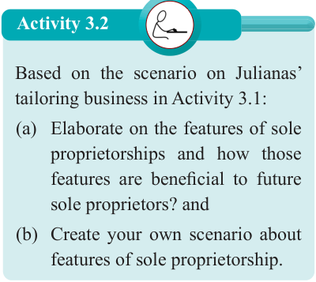

Activity 3.2

Based on the scenario on Julianas’ tailoring business in Activity 3.1:
(a) Elaborate on the features of sole proprietorships and how those features are beneficial to future sole proprietors? and
(b) Create your own scenario about features of sole proprietorship.